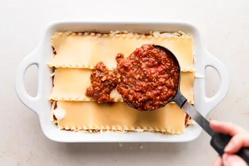

Inicio
Lasaña

Descripción
La lasaña es un clásico de la cocina italiana hecho con capas de pasta, salsa de carne, salsa bechamel y mucho queso. Es un plato contundente y perfecto para compartir.
Ingredientes
- 12 láminas de lasaña
- 500 g de carne picada de res
- 1 cebolla picada
- 2 dientes de ajo picados
- 800 g de tomate triturado
- 400 g de queso ricota
- 300 g de mozzarella rallada
- Sal y pimienta al gusto
Pasos
- Precalienta el horno a 180 °C.
- Cocina las láminas de lasaña y escúrrelas.
- Sofríe la cebolla, el ajo y la carne hasta dorar.
- Añade el tomate triturado y cocina a fuego lento por 15 minutos.
- Coloca capas de pasta, carne, ricota y mozzarella en una fuente; repite.
- Hornea durante 30–35 minutos hasta que esté dorada.
Inicio